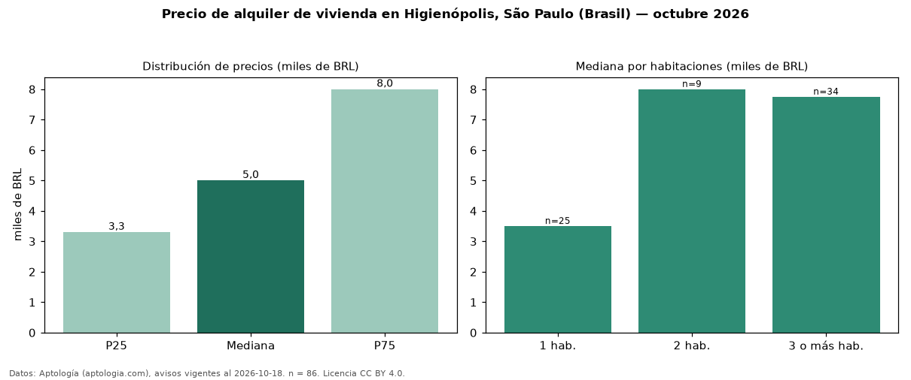

Precio de alquiler de vivienda en Higienópolis, São Paulo (Brasil) — octubre 2026
BRL 5.000 al mes es el canon mediano de vivienda en alquiler en Higienópolis, São Paulo (Brasil) (n = 86 avisos). Por metro cuadrado, la mediana es BRL 69,50/m² al mes (n = 83 avisos con área). Por tipo: 74 % apartamentos, 21 % kitnets y studios, 5 % casas. El área mediana anunciada es 66 m². La mitad central de los avisos va de BRL 3.300 a BRL 8.000 (razón 2,4), una dispersión alta. El segmento con más oferta es el de 3 o más habitaciones (34 avisos, mediana BRL 7.750); pasar de 1 habitación a 3 o más habitaciones cambia la mediana +121 %. La cuota de mantenimiento o condominio mediana declarada es BRL 1.594 al mes (n = 85), aparte del canon. 91 % de los avisos con el dato declara estacionamiento o cochera. Datos: Aptología (aptologia.com), CC BY 4.0 — https://www.aptologia.com/br/aluguel/sao-paulo. Archivos: PDF, CSV con las cifras y gráfica PNG.

| Avisos únicos | 86 |
|---|---|
| Percentil 25 | COP 3.300 |
| Mediana | COP 5.000 |
| Percentil 75 | COP 8.000 |
| Mediana por m² | COP 69 |
Fuente: avisos vigentes de portales inmobiliarios recopilados por Aptología, deduplicados (mínimo 30 avisos únicos por celda). Precios pedidos, no cerrados. Fecha: 2026-10-18.